Ở FPT thì các hoạt động được diễn ra thường xuyên, sự kiện nào cũng được đầu tư với quy mô và tổ chức chuyên nghiệp. Dưới đây là một số hoạt động nổi bật.
Open Day
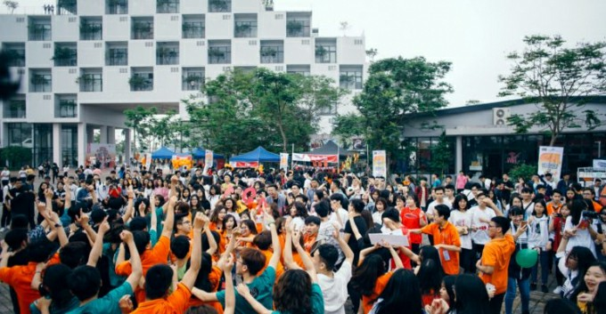 Buổi lễ super big open day tại đại học FPT. (Nguồn fb: ĐH FPT Hà Nội & https://daihoc.fpt.edu.vn).Trải nghiệm 1 ngày làm sinh viên ĐH tại FPT dành cho học sinh THPT. Tại hoạt động này, các bạn sẽ được trải nghiệm các hoạt động: võ Vovinam, nhạc cụ truyền thống, ... để có cái nhìn chân thật nhất khi là sinh viên xứ Hola.
Đêm Kết Nối (quân sự)
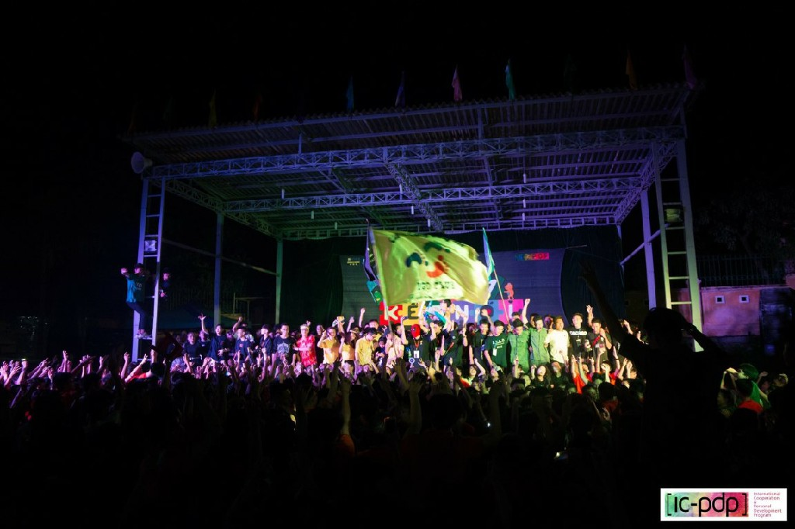 Đêm kết nối tại Trung tâm Giáo dục Quốc Phòng Hà Nội 2 - Xuân Hòa. (Nguồn fb: ĐH FPT Hà Nội).Đêm kết nối là một buổi giao lưu giữa các thầy cô, sinh viên với tân sinh viên trong thời gian tham gia quân sự. Đây là ngày giúp các tân sinh viên có cơ hội tìm hiểu thêm về các câu lạc bộ và hòa với văn hóa của trường cùng với các tiết mục được luyện tập kỹ lưỡng.
Lady By Night (quân sự)
.jpg) Buổi lễ ladies by night tại Trung tâm
Giáo dục
Quốc Phòng Hà Nội 2 - Xuân Hòa. (Nguồn: cocdoc)
Buổi lễ ladies by night tại Trung tâm
Giáo dục
Quốc Phòng Hà Nội 2 - Xuân Hòa. (Nguồn: cocdoc)
Đây cũng là một hoạt động được tổ chức tại thời điểm diễn ra kỳ tham gia quân sự của tân sinh viên.Lady by night là đêm hội tranh đoạt ngôi hậu giữa các “Tuyệt sắc giai nhân”.
Tại đây, các bạn nam sẽ hoá trang thành các cô nàng xinh đẹp, mặc trên mình các “bộ cánh” của các bạn nữ và tham gia 3 phần thi: trình diễn catwalk, quay video quảng cáo sản phẩm và xử lí tình huống. Sau đó BGK sẽ chấm điểm và người được tổng điểm cao nhất sẽ dành được ngôi Nam hậu của cuộc thi .
Ngày Hội Hướng Nghiệp (Career Day)
.jpg) Ngày hội hướng nghiệp tại đại học FPT
(Nguồn fb: ĐH FPT Hà Nội).
Ngày hội hướng nghiệp tại đại học FPT
(Nguồn fb: ĐH FPT Hà Nội).
Career Day là sự kiện do chính những cán bộ và giảng viên tại ĐH FPT trực tiếp chia sẻ về những ngành nghề đang hot nhất hiện nay. Tại đây sinh viên có cơ hội được đặt ra những câu hỏi để được giải đáp một cách tốt nhất.
Workshop
.jpg) Trong một buổi workshop tại đại học
FPT
(Nguồn fb: ĐH FPT Hà Nội).
Trong một buổi workshop tại đại học
FPT
(Nguồn fb: ĐH FPT Hà Nội).
Được biết đến là những buổi chia sẻ những kỹ năng cũng như kinh nghiệm cho sinh viên từ những diễn giả về nhiều lĩnh vực, Workshop luôn được các bạn sinh viên FPT quan tâm và tham gia nhiệt tình.
F-Camp
.jpg) Buổi chào đón tân sinh viên của đại
học FPT
(Nguồn fb: ĐH FPT Hà Nội).
Buổi chào đón tân sinh viên của đại
học FPT
(Nguồn fb: ĐH FPT Hà Nội).
F-Camp là chương trình thường niên do sinh viên khóa trên tổ chức để chào đón các tân sinh viên.
FPTU Talent Show
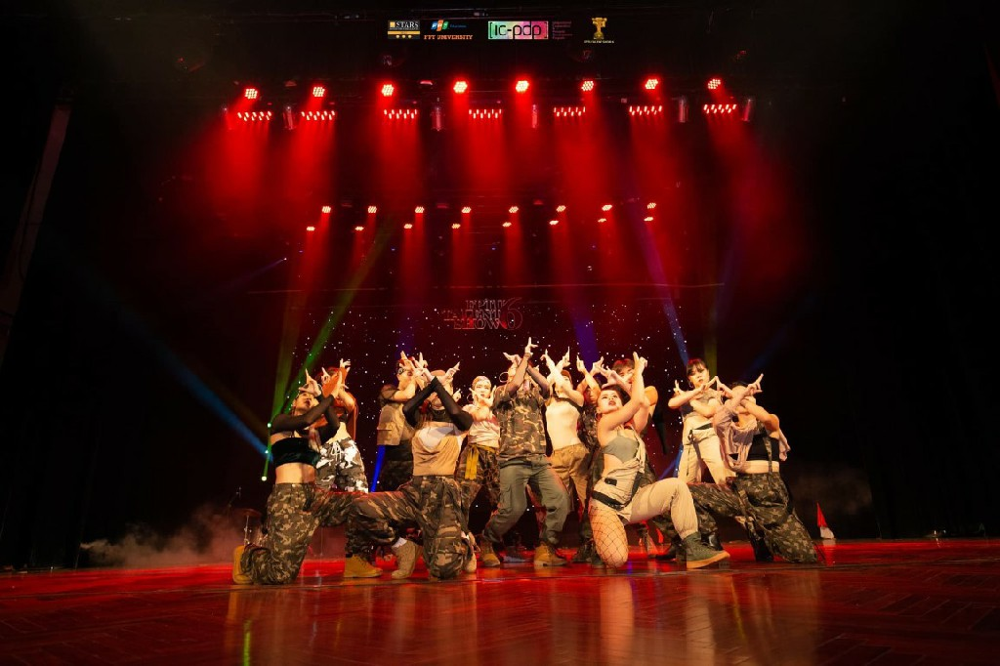 Một trong tiết những mục trong cuộc thi FPTU Talent Show (Nguồn fb: ĐH FPT Hà Nội).Cuộc thi tìm kiếm tài năng sinh viên, với mong muốn tìm ra những tài năng đặc biệt của các bạn sinh viên trong trường.
Tết Dân Gian
.jpg) Tết dân gian tại đại học FPT
(Nguồn fb: ĐH FPT Hà Nội).
Tết dân gian tại đại học FPT
(Nguồn fb: ĐH FPT Hà Nội).
Tết dân gian được tổ chức thường niên với trang trí vô cùng màu sắc vào thời điểm sinh viên chuẩn bị được nghỉ Tết. Đến với lễ hội này, bạn sẽ được thưởng thức đa dạng món ăn từ các gian hàng khác nhau, bên cạnh đó lại được hòa mình vào không gian nghệ thuật do chính sinh viên biểu diễn.
Lễ Tôn Vinh
.jpg) Lễ tôn vinh tại đại học FPT
(Nguồn: https://www.facebook.com/icpdp.hn).
Lễ tôn vinh tại đại học FPT
(Nguồn: https://www.facebook.com/icpdp.hn).
Một buổi lễ trang trọng được tổ chức để vinh danh các cá nhân, câu lạc bộ xuất sắc trong các kỳ học của năm. Mỗi kỳ, trường lại có những thay đổi thú vị tại buổi lễ này.
Tổ chức các cuộc thi trong phạm vi khối đại học FPT
FPT Edu Hackathon (Công nghệ thông tin)
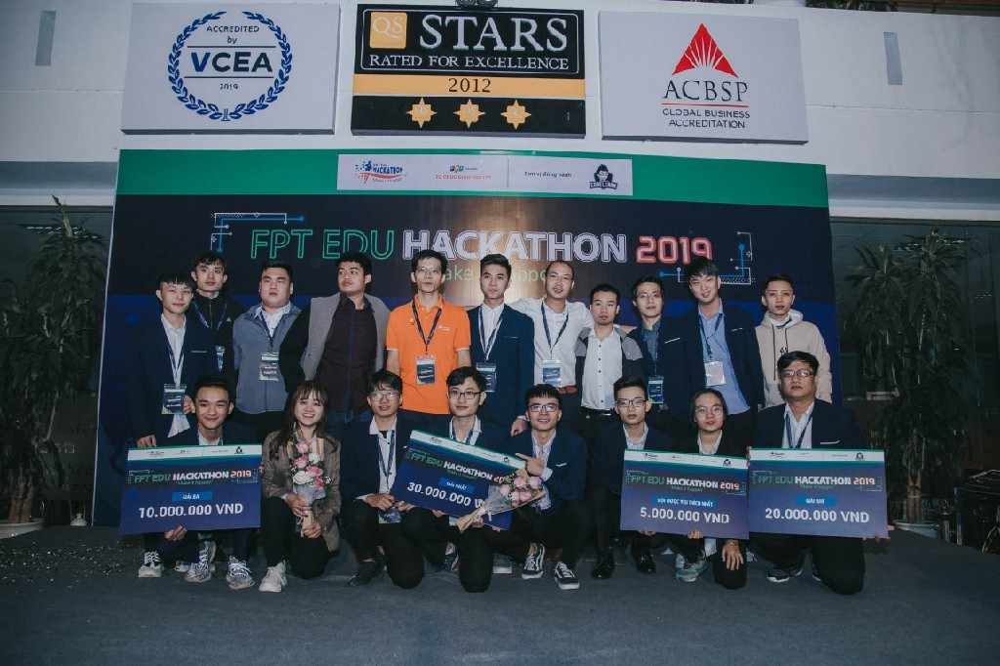 Lễ trao giải trong cuộc thi FPT Edu Hackthon (Nguồn: ĐH FPT Hà Nội).FPT Edu Color (Thiết kế đồ họa)
.jpg) Chung kết FPT Edu Color (Nguồn:
fb/FPT Edu Color Up )
Chung kết FPT Edu Color (Nguồn:
fb/FPT Edu Color Up )
Câu Lạc Bộ
Guitar Club
.jpg) Câu lạc bộ Guitar của trường đại học
FPT
(Nguồn: fb/FU Guitar club ).
Câu lạc bộ Guitar của trường đại học
FPT
(Nguồn: fb/FU Guitar club ).
Link Facebook: FU Guitar Club
CLB năng động sôi nổi với nhiều sự kiện thường niên với quy mô lớn
FPTU Melody Club

Link Facebook: FPTU Melody Club
CLB hội tụ những thành viên có đam mê mới ca hát và âm nhạc.
FPTU NoShy Club
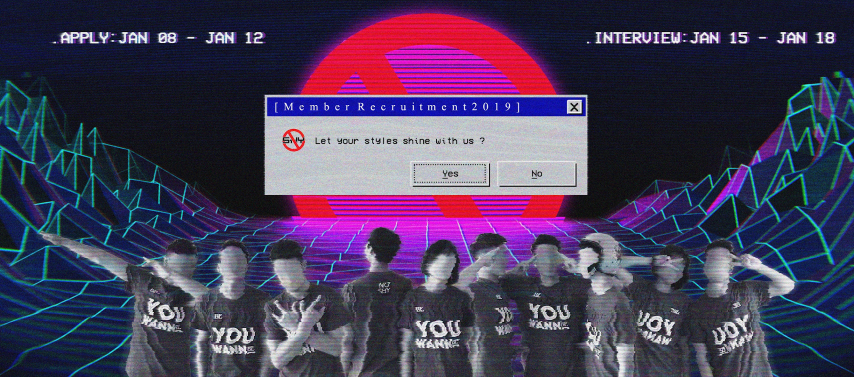Link Facebook: FPTU NoShy Club
No Shy đem đến một môi trường giúp mỗi cá nhân bộc lộ cá tính riêng của mỗi thành viên, cùng với đó là rèn luyện khả năng tiếng Anh và kỹ năng mềm.
FPTU Taekwondo Club (FTC)
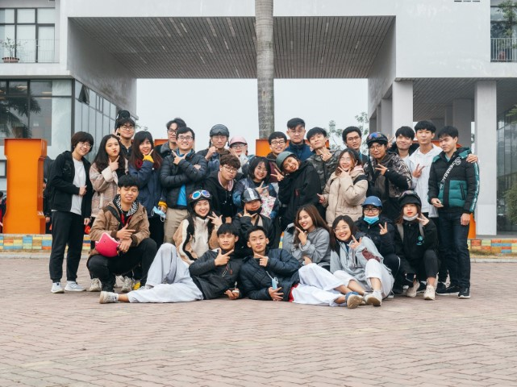Link Facebook: FPTU Taekwondo Club
CLB võ thuật có nguồn gốc từ Hàn Quốc. Là clb võ duy nhất trong trường do sinh viên thành lập, Taekwondo giống như gia đình thứ hai để cảm nhận sự vui vẻ, thân thiện, nhiệt tình từ các thành viên với phương châm “Không để ai bị bỏ lại phía sau”, “Fighting - Trying - Connecting”.
FPTU Vovinam Club (FVC)

Link Facebook: FPTU Vovinam Club
Là một CLB võ cổ truyền Việt Nam, FVC luôn giữ trong mình tinh thần võ đạo và nhiệt huyết, gắn liền với slogan "Pain is temporary - Glory lasts forever".
FPTU Street Workout (FUSW)

Link Facebook: FPTU Street Workout
CLB hội tụ những thành viên yêu thích Calisthenics và Street Workout.
FPTU Chinese Club (FCC)

Link Facebook: FPTU Chinese Club
CLB với niềm đam mê, yêu thích ngôn ngữ và văn hóa Trung Hoa. Tại đây, mỗi thành viên sẽ được học hỏi kinh nghiệm những sinh viên khóa trước từ học thuật cho đến kỹ năng trong tổ chức sự kiện.
FPTU English Club (FEC)
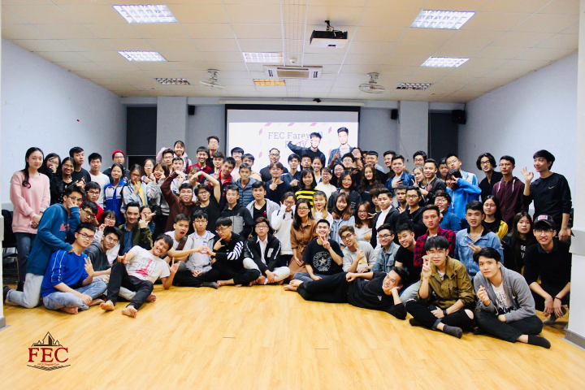Link Facebook: FPTU English Club
Là 1 CLB học thuật, FEC training class sẽ mang lại cho bạn không chỉ kiến thức mà còn là niềm vui khi được học Tiếng Anh nữa đó!
FPTU Traditional Instrument Club (FTIC)
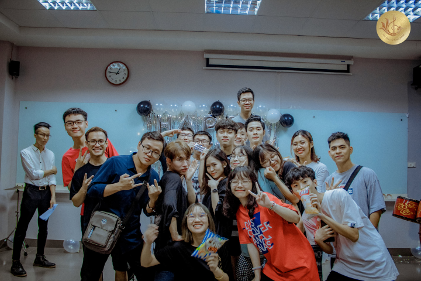Link Facebook: FPTU Traditional Instrument Club
CLB tụ họp những thành viên đam mê âm nhạc truyền thống, các bạn sẽ được tham gia lớp học đủ các loại nhạc cụ từ các thành viên đã có kinh nghiệm, được trình diễn tại các sự kiện.
FPTU Business Club (FBC)

Link Facebook: FPTU Business Club
CLB là nơi các thành viên trau dồi kinh nghiệm, đưa ý tưởng sáng tạo cho những dự án kinh doanh.
FPTU JS Club (FJC)
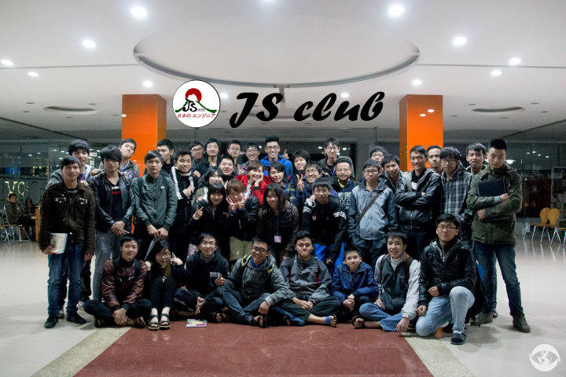Link Facebook: JS Club
CLB tụ hội những bạn đam mê tiếng Nhật và lập trình.
FPTU iGo Club
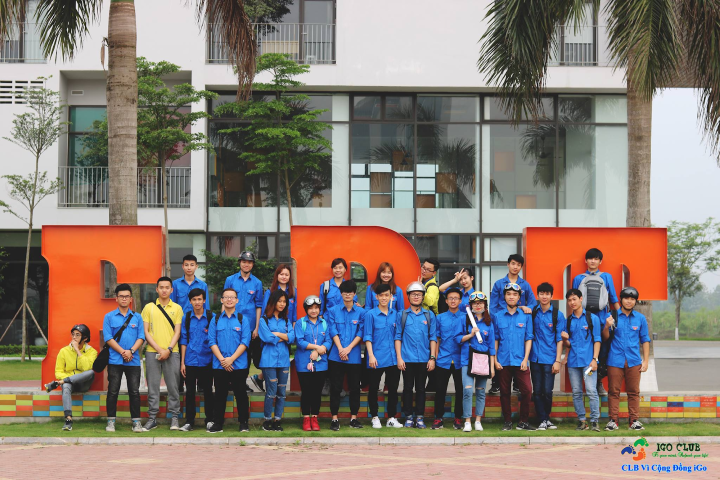Link Facebook: iGo Club
Đúng như cái tên thì iGo là nơi mà các thành viên cùng nhau tổ chức những dự án đem lại lợi ích cho xã hội, clb luôn chào đón những tấm lòng thiện nguyện.
Soleil Crew
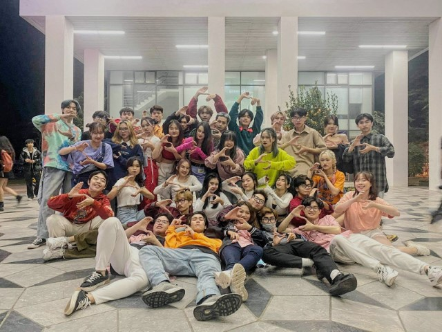Link Facebook: Soleil Crew
Là 1 nhóm nhảy, Soleil cũng giống như những nhóm nhảy khác là đem lại màu sắc tích cực cho thành viên, bên cạnh đó là cùng nhau vui chơi và luyện tập.
FPTU Hip Hop

Link Facebook: Hip Hop Club
Tham gia HFU, bạn sẽ có cơ hội được tham gia các lớp học nhảy từ cơ bản nhất. Với slogan “Hip Hop We Don’t Stop”, HFU là sự lựa chọn hoàn hảo cho những ai có niềm đam mê với bộ môn này.
FU Debate Club

Link Facebook: FU Debate Club
Môi trường giúp bạn sẵn sàng nói lên quan điểm và phản biện, bên cạnh đó sẽ được tiếp cận sâu hơn về các vấn đề của xã hội ở thời điểm hiện tại, giao lưu và kết bạn.
FU Psychology Club

Link Facebook: FU Psychology Club
Nơi mọi người cùng nhau giao lưu, tìm hiểu về vấn đề tâm lý học, giúp mọi người cũng như chính bản thân mình.
FU Cinema Studio
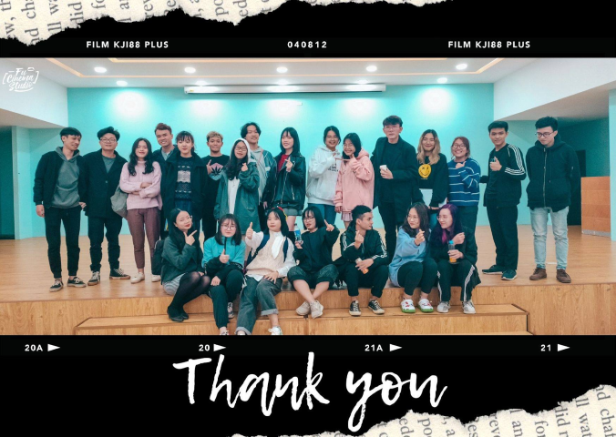Link Facebook: FU Cinema Studio
CLB dành cho sinh viên yêu thích phim, muốn học hỏi, sáng tạo và thưởng thức các tác phẩm cũng như muốn thử sức trong lĩnh vực điện ảnh.
CLB Cờ Vây
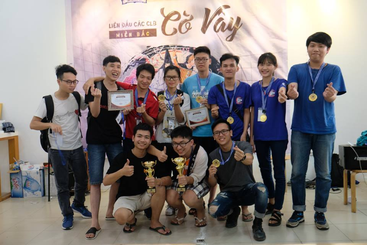Link Facebook: CLB Cờ Vây FPT
Nơi tụ hội những con người với đam mê chơi cờ vây
FPT Badminton Club (FBC)
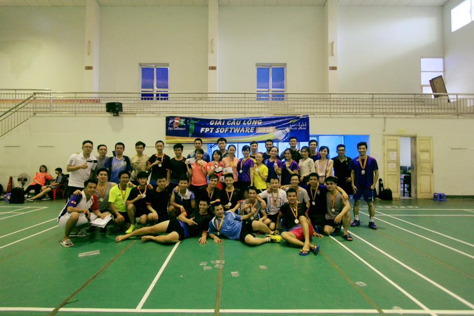Link Facebook: FPT Badminton Club
Bộ môn tưởng đơn giản nhưng cũng rất khó nhằn, hãy đến với Badminton Club nếu bạn yêu thích bộ môn này và muốn tìm hiểu sâu hơn về cách chơi thi đấu đúng cách và giao lưu với sinh viên khóa trước
CLB Bóng đá (FFC)

Link Facebook: CLB Bóng đá
Đến với clb thể thao vua này, bên cạnh việc được rèn luyện thể lực và sức khỏe thì các bạn còn được tham gia các hoạt động bổ ích, giúp tăng sự gắn kết giữa các thành viên trong clb.
FU Book Club
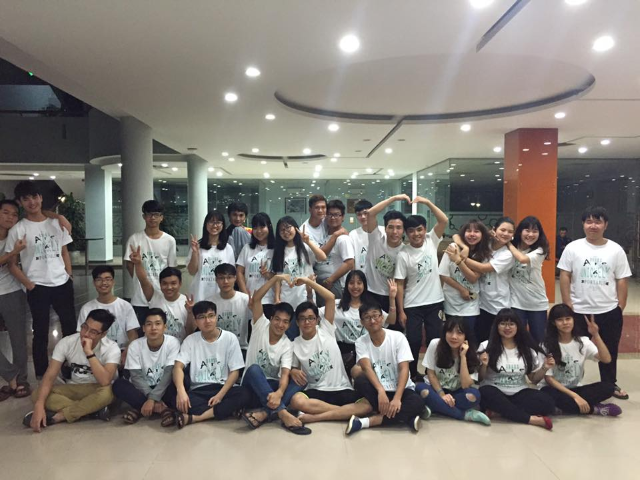Link Facebook: FU Book Club
CLB dành cho những bạn yêu thích sách, văn hóa, tri thức và nghệ thuật sống
CLB Chứng Khoán (FSIC)

Link Facebook: CLB Chứng Khoán
Nơi ẩn chứa những thành viên có niềm đam mê với chứng khoán, nghe rất ngầu phải không nào.
CLB Mây Mưa (FJC)
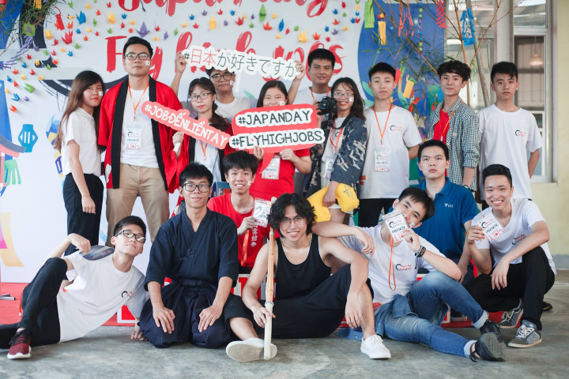Link Facebook: CLB Mây Mưa
Nơi dành cho tất cả những ai yêu thích đất nước, văn hóa, ẩm thực, nghệ thuật, … của Nhật Bản.
CLB Gymnastic

Link Facebook: CLB Gymnastic
CLB tụ họp những con người với sự yêu thích vẻ đẹp hình thể và sức mạnh.
CLB Thể thao điện tử (ESC)

Link Facebook: Esports For Students Campus of FPT Ha Noi
CLB tạo ra sân chơi cho những ai có niềm đam mê với Esport, thỏa sức thể hiện tại các giải đấu mà clb tổ chức, học hỏi và trau dồi thêm kỹ năng cá nhân.
Dango Club (văn hóa, giải trí, game Nhật Bản)
Link Facebook: Dango Club
Nếu bạn có sở thích về manga, anime, cosplay... thì đại gia đình Dango là nơi dành cho bạn.
FPTU Chess Club
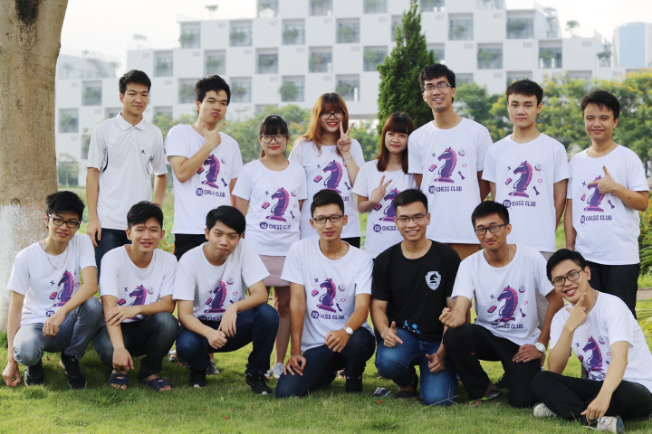Link Facebook: FU-HL Chess Club
Slogan: “Life is simple: eat, sleep and CHESS”, thật thú vị phải không nào.
FPTU I-Skate Slub

Link Facebook: FPTU I-Skate Club
Tham gia clb để giao lưu kết bạn và được thỏa sức vui chơi các bộ môn trượt ván, trượt patin, freeline nhé.
CLB Muay Thái (FMUC)
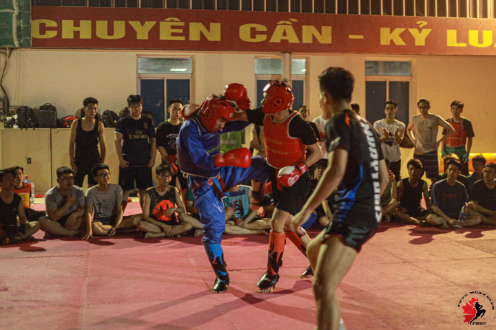Link Facebook: FMUC - FPTU Muay Club
CLB thể chất dành cho những ai đam mê bộ môn Muay Thái
CLB Ethical Hackers (An toàn thông tin)
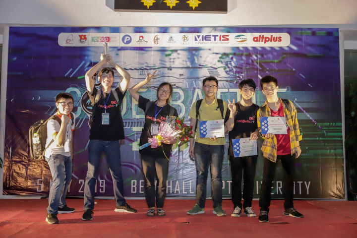Link Facebook: FPTU - Ethical Hackers Club
CLB học thuật với mục đích trở thành mái nhà cho các bạn ngành An toàn thông tin
FU - Photography (FUP)
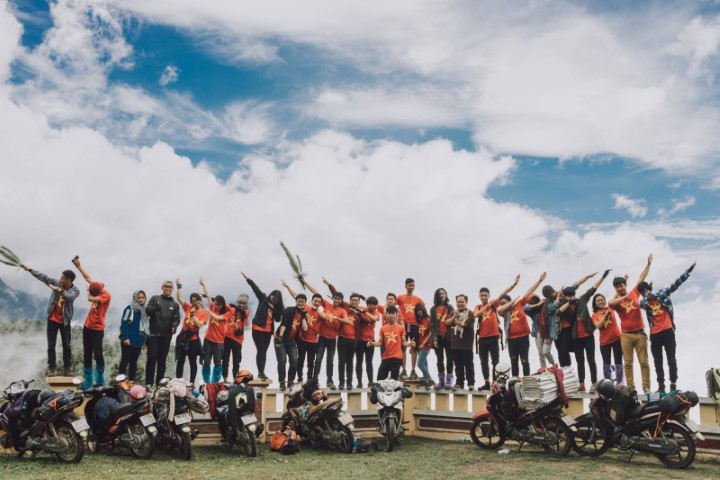Link Facebook: FU - Photography
Nơi tụ họp những thành viên yêu thích ảnh và chụp ảnh, ngoài ra sẽ giao lưu chia sẻ về các hoạt động bên lề của clb.
CLB Trí tuệ nhân tạo (AI Club)
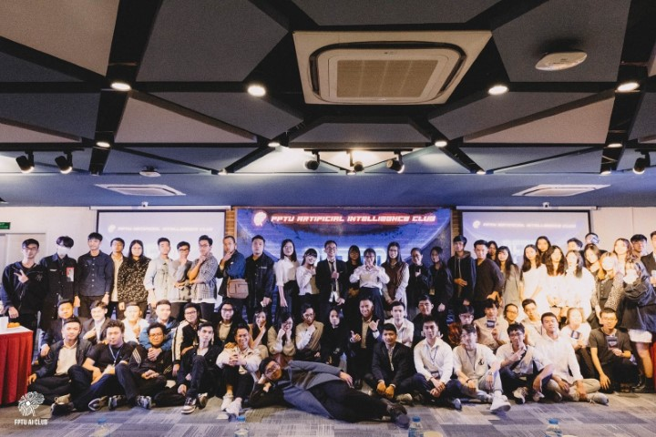Link Facebook: FPTU AI Club - Artificial Intelligence Researchers
Câu lạc bộ trí tuệ nhân tạo với mong muốn tạo môi trường học thuật, thúc đẩy nghiên cứu và ứng dụng vào thực tế.
Hebe Club (múa)

Link Facebook: CLB Hebe - FPT University
CLB dành cho sinh viên có niềm đam mê với các loại múa
CLB Board Game (FBGC)

Link Facebook: FPTU - Board Game Club
Nơi dành cho tất cả những ai có niềm yêu thích với board games như: Uno, Mèo nổ, Ma sói, …
FPT Junior Yosakoi (múa Yosakoi)
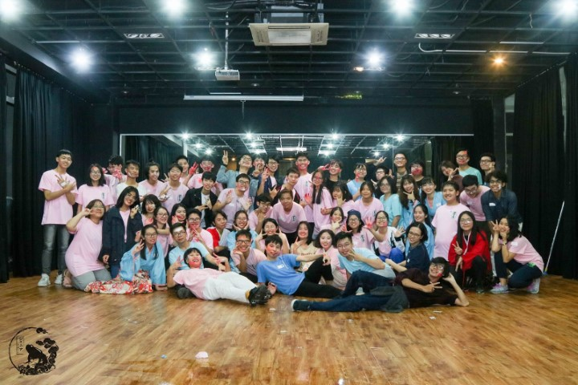Link Facebook: FPT Junior Yosakoi
Nơi mà các thành viên đam mê với Nhật Bản và phong cách nhảy Yosakoi của Nhật
CLB CppGeeks (Lập trình C++)
Link Facebook: CppGeeks FPTU
Clb học thuật chuyên về lập trình C++, bên cạnh đó bạn sẽ được tìm hiểu những công nghệ mới, làm project theo sở thích của bản thân.
FPTU Nunchaku Club (Côn nhị khúc)

Link Facebook: FNC - FPTU Nunchaku Club
Điểm đến của những người có đam mê với bộ môn côn nhị khúc
Color Team

Link Facebook: Color Team
Nhóm chuyên làm game cho các sự kiện của trường
FPTU Basketball Club (FUBC)

Link Facebook: FPTU Basketball Club
Nơi sinh hoạt hàng tuần của các thành viên cùng niềm đam mê bóng rổ. Ngoài cải thiện sức khỏe thì Basketball cũng là nơi để các bạn có thêm một gia đình nữa đó.
Đăng bởi Ngọc Đức
tham khảo thông tin từ
Đại
học FPT
.